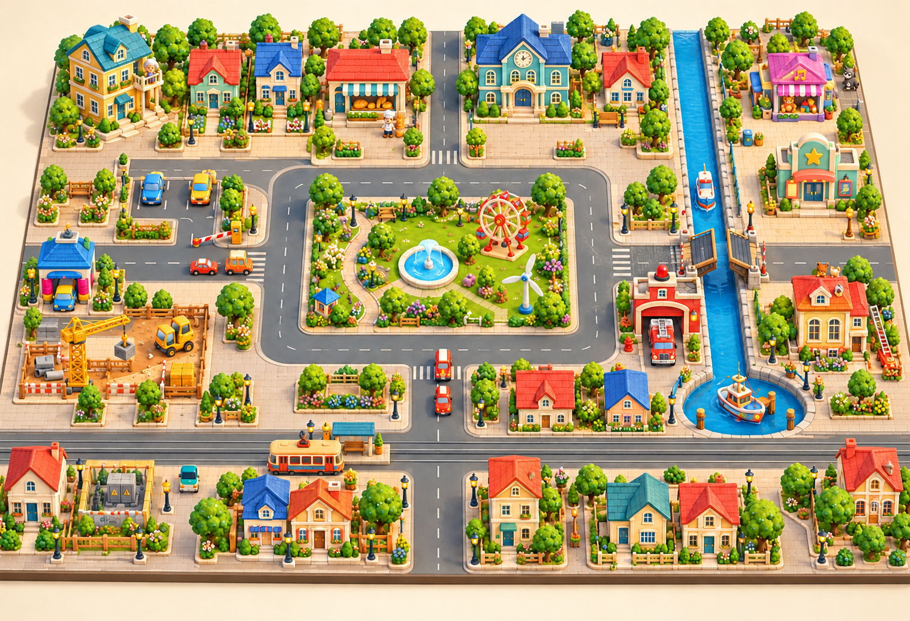

Кварталы вокруг парка, трамвайная улица и набережная. Игровые места сохраняются: оформление строится вокруг уже работающих заданий.

Image-концепт. Это художественная цель: часть показанных зданий и устройств ещё предстоит создать. Точные координаты берутся из кода, а не измеряются по картинке.
14 заданий · доска 110 × 75
Парк, улицы, маршруты и все игровые точки сохранены. Ниже координаты x / z в мировых единицах. Питание и связанные устройства входят в одну рабочую зону.
Прямоугольники 4 × 4 вокруг слотов — ориентир для защиты от нового декора. Пересечения с будущими домами проверяются по настоящим моделям на следующем этапе.
От красивой картинки к игре
Сначала фасады и аккуратные кварталы; затем деревья, скамейки и клумбы. Оставляем свободные дворы перед заданиями и проходы транспорта. Зелень переиспользуем в облегчённых вариантах.